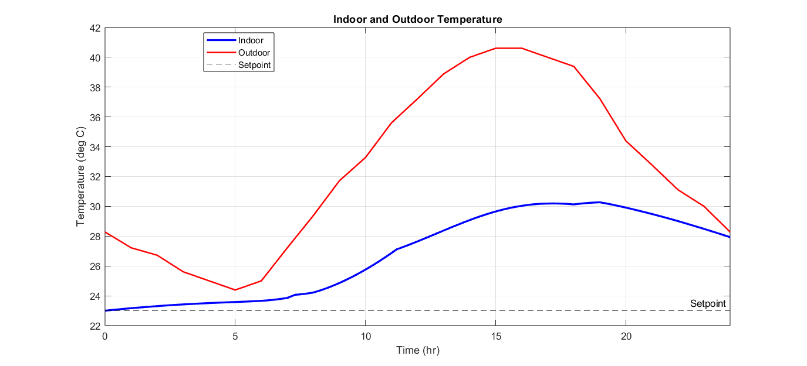
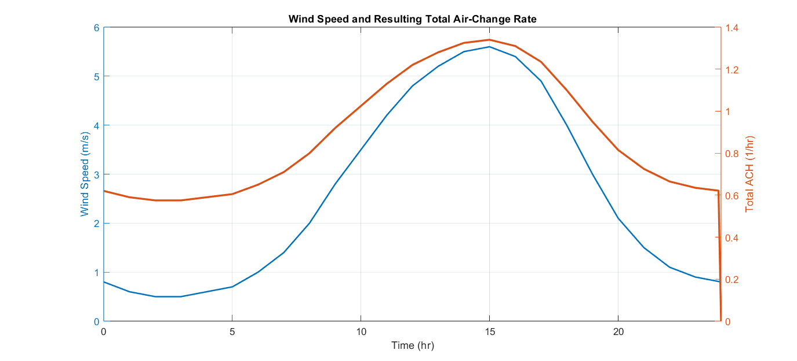

MATLAB / Simulink / Thermal Modeling / Controls
HVAC Thermal Simulation
A transient, single-zone MATLAB/Simulink model of an off-grid cabin's air conditioning system, predicting indoor temperature, humidity, and electrical demand over a 24-hour period to support HVAC sizing and control-strategy decisions.

System Overview
This is a transient MATLAB simulation of an off-grid cabin's air conditioning system. It steps forward in six-minute increments across a 24-hour day, solving indoor temperature and indoor humidity ratio coupled first-order ODEs. This is done with real weather, occupancy, and equipment inputs.
The architecture diagram above is a map of how the code executes, read left to right. Main sits directly under the MATLAB front end because it's the only script the user runs with everything else called from it, in this order:
- Setup — before the transient loop starts,
mainrunssimulation_parameters,constants_script,air_conditioner_parameters,weather_script,building_script,loads_script,moisture_script, andHVAC_script, in that order. Each one hands the next whatever it needs: simulation settings and physical constants come first because everything else references them; weather has to load before moisture initialization can compute a starting humidity ratio from the initial pressure; and HVAC setup runs last because it needs the AC ratings already defined. By the time the loop starts, every fixed input and constant the transient calculation will need already exists. - Controller → HVAC/Loads Calculations — once inside the timestep loop, the controller runs first because everything downstream depends on whether the AC is on. It takes the indoor temperature from the previous timestep, applies hysteresis plus occupancy setback, checks the minimum-runtime lock, and outputs a single AC state (0 or 1). That state then feeds the HVAC/Loads block, which computes AC COP, fan power, solar gain, ventilation, and envelope conduction for the current timestep — the AC's cooling output literally can't be calculated until the controller has decided whether it's running.
- RK4 steps — every heat and moisture term calculated in the previous block (envelope, ventilation, solar, internal, AC sensible/latent) is what gets summed inside
state_derivatives()to form dT/dt and dw/dt. RK4 evaluates that function four times (the "4 slopes") at slightly different sub-step temperatures/humidities, combines them, and produces the updatedT_indoorandw_indoorfor the next timestep. - The feedback loop — the line running from "Update T & ω" back up to the Controller column is the actual
forloop inmain.m: the newly integrated temperature becomes the input the controller reads on the next iteration. Every other block is stateless from one timestep to the next — only temperature and humidity ratio persist and feed forward, which is what makes this a genuinely transient simulation rather than 24 independent steady-state solves. - Results — once the loop finishes all timesteps,
mainreduces the full time-history arrays into energy totals, AC duty cycle, an overall system COP, and the temperature/humidity/power plots shown later on this page.
Put another way: weather_script, building_script, and loads_script hand main the "world" the cabin exists in; the controller and HVAC block decide what the AC does to that world at each instant; the RK4 integration is where the physics actually gets solved; and the loopback is what turns a single timestep's calculation into a full 24-hour transient response.
Engineering Approach
Every subsystem is derived directly from its governing physics rather than an empirical curve fit or a black-box block, and the model was built up in deliberate increments — starting from a bare-bones baseline (fixed ventilation, no thermal mass, constant COP, explicit Euler integration) and adding one mechanism at a time, checking after each addition that the result moved in the direction the physics predicted. That incremental process is what makes it possible to trust that a given result — say, the humidity dip once the AC engages — is coming from the mechanism it's supposed to, not a solver artifact.
How the Modules Work
The modules below are ordered how the information moves through the simulation
1. Simulation Parameters (simulation_parameters.m)
Inputs and Outputs: Takes no upstream inputs and outputs the simulation time grid, an enable/disable flag for each physical process, initial indoor conditions, and controller tuning values, each defined by the user.
A six-minute timestep over a 24-hour day is the time vector. Flags (ENABLE_SOLAR, ENABLE_THERMAL_MASS, ENABLE_VARIABLE_COP, etc.) lets the user test each part independently. Setback and minimum-runtime values are defined here.
2. Constants (constants_script.m)
Inputs and Outputs: Takes no upstream inputs and outputs constants such as specific heat, latent heat, gas constant, reference air density, and the solar/thermal-mass/ventilation/COP coefficients, each defined by the user.
Centralizing constants and coefficients in this file keeps the simulation organized
3. AC Parameters (air_conditioner_parameters.m)
Inputs and Outputs: Takes the AC's rating in BTU/hr as input and outputs its rating in watts, rated COP, sensible/latent split, thermostat setpoints, and initial AC state.
SI conversion done for easier calculations. Splitting rated capacity into a fixed sensible fraction (Frac_sens = 0.75) because a real evaporator coil removes both heat and moisture.
4. Weather (weather_script.m)
Inputs and Outputs: Takes hourly outdoor data files (dry-bulb temperature, dew point, pressure, wind speed, solar irradiance) as input, and outputs interpolated values per timestep ( T_out, w_out, Patm_now, Wind_now, Solar_now).
Each value is interpolated to the timegrid defined in simulation parameters and the first hour's values are duplicated at hour 24 so the interpolation wraps cleanly overnight. Outdoor humidity ratio is determined from dew point using the Magnus equation, Psat = 610.94*exp(17.625*T/(T+243.04)) using the current interpolated pressure.
5. Building Envelope (building_script.m)
Inputs and Outputs: Takes housing geometry and U values as input and outputs envelope conductance (UA_shell) and thermal capacitance (C_building) every timestep.
Uses Fourier's law in lumped form, Q = UA·ΔT and solvess for U and A here. Thermal mass also uses area normalized heat capacities for wall, roof, and floor, added to the air's own thermal mass (m_air = ρ·V_air, C_air = m_air·cp) to ensure the cabin responds gradually to changing conditions instead of instantaneous changes.
6. Internal Loads (loads_script.m)
Inputs and Outputs: Takes hourly occupancy and equipment schedule files as inputs and outputs sensible heat gain (sens_gain(n)) and moisture generation (vap_gen(n)) every timestep.
Assigns a 0 or 1 value for every timestep to indicate if the occupant or equipment is generating moisture or heat. This 0 or 1 value is multiplied by activity such as cooking.
7. Moisture Initialization (moisture_script.m)
Inputs and Outputs: Takes the initial indoor temperature and RH from Simulation Parameters and the starting atmospheric pressure from Weather as input and outputs the initial humidity ratio, vapor pressure, and dew point.
Magnus equation is used to determine initial psychrometric values used in later coupled equations.
8. HVAC Setup (HVAC_script.m)
Inputs and Outputs: Takes rated capacity, COP, and sensible/latent fractions from AC Parameters as input and outputs rated sensible/latent capacity and rated (compressor-only) electrical power, plus the zeroed result arrays the transient loop will fill in.
Q_AC_sens_rated and P_AC_rated are references used to size the initial arrays and for performance comparisons. They aren't values used during the simulation since COP is not constant. Real COP and fan power are computed by the AC Performance script on every timestep. They are separated to compare how much a given timestep's real performance has degraded from the equipment's rated performance.
9. Controller (controller_step())
Inputs and Outputs: Takes the indoor temperature from the previous timestep's integration and the occupancy/activity schedule as input and outputs a single AC_state (0 or 1) for the current timestep.
AC turns on at the upper deadband, off at the lower one, and holds state in between, based on real thermostat hysteresis. Occupancy based setback changes both thresholds when the cabin is asleep or unoccupied since an empty home requires less cooling. A minimum runtime check blocks state change if too little time has passed since the last switch to stop the compressor from short-cycling.
10. AC Performance (hvac_step())
Inputs and Outputs: Takes AC_state from the Controller and T_out from Weather as input and outputs the cooling delivered (Q_AC_sens and Q_AC_lat), power drawn (P_AC), and moisture removal rate (m_dot_vap_AC).
Real AC performance degrades in hot weather so COP is corrected linearly with outdoor temperature above the rated condition and floored at a minimum fraction so it can't collapse toward zero with the formula: COP = COP_rated·max(1 − k·(T_out − T_rated), COP_min_frac). Cooling output is split into sensible and latent fractions of rated capacity, since a real evaporator coil removes both heat and moisture at once, and electrical draw is the cooling load divided by that variable COP plus a constant fan power, P_AC = Q_AC/COP + P_fan.
11. Solar Gain (solar_gain())
Inputs and Outputs: Takes solar irradiance from Weather and glazing area from Building as input and outputs a single sensible heat term (Q_solar).
M This sensible heat term is equal to irradiance times the window's solar heat gain coefficient times glazing area (Q_solar = GHI · SHGC · A_glazing). The north/south and east/west-facing glazing were given their own incidence factors so windows facing different directions contribute differently. It's a simplified placeholder for real solar gains but modeling realistic shading and sunlight positioning would have been enormous work for little gain.
12. Ventilation (ventilation_flow())
Inputs and Outputs: Takes the current indoor temperature, wind speed and atmospheric pressure from Weather script as input and outputs a ventilation heat transfer conductance and moisture-transfer term, Q_ventilation and m_dot_vap_vent.
Infiltration is treated as a baseline air-change rate (from Simulation Parameters) plus a term proportional to wind speed, ACH = ACH_base + k·Wind, grounding it in the actual physical driver — wind-induced pressure difference — instead of a fixed schedule. Air density is computed from the ideal gas law using the current pressure and indoor temperature, ρ = P/(R·T), so the resulting mass flow (mdot = ACH·V·ρ/3600) and its equivalent thermal conductance (UA_venti = mdot·cp) stay physically consistent as weather changes through the day, instead of assuming a fixed air density year-round.

13. Integration (state_derivatives() + RK4, in main.m)
Inputs and Outputs: Takes every heat and moisture term produced by the modules above (envelope, ventilation, solar, internal, and AC sensible/latent) as input and outputs the updated indoor temperature and humidity ratio for the next timestep (T_indoor(n+1) and w_indoor(n+1)).
The energy balance sums those terms and divides by the building's thermal capacitance, dT/dt = (Q_envelope + Q_ventilation + Q_internal + Q_solar − Q_AC_sens) / C_building, while the moisture balance sums generation, ventilation transfer, and AC removal divided by air mass, dw/dt = (vap_gen + m_dot_vap_vent − m_dot_vap_AC) / m_air — both packaged into one state_derivatives() function. Rather than the explicit Euler integration used in the model's first version, both states are now advanced together with classical 4th-order Runge-Kutta, which evaluates that function at four sub-step points and combines them for a meaningfully more accurate result at the same six-minute timestep. The resulting T_indoor(n+1) is exactly what the Controller (module 9) reads as its input on the next loop iteration — this is what closes the loop and makes the simulation transient rather than 24 independent steady-state solves.

14. Moisture & Psychrometrics Recovery (psychrometrics_from_w())
Inputs and Outputs: Takes the integrated humidity ratio and temperature as input and outputs relative humidity and dew point (RH_indoor and T_dew_indoor).
Rather than tracking RH as its own state, the model tracks humidity ratio via true mass conservation of water vapor and recovers RH and dew point algebraically using the Magnus saturation curve (RH = 100 · P_vapor / Psat). Keeping the recovery separate from the integrated state means temperature and moisture stay coupled through one consistent set of equations. Its outputs are logged for the Results plots but aren't read by any other module in the loop which means this is the one module that doesn't feed back into the next timestep.
The Feedback Loop and Control System
Loop: Each iteration, the Controller (module 9) reads T_indoor(n) and outputs AC_state; that state drives AC Performance and, with the other load modules, gets integrated by module 13 into T_indoor(n+1) — which is exactly what the Controller reads on the next iteration. That's the whole loop: one measurement (temperature) goes out, one decision (AC state) comes back, closing on itself every timestep. Weather, solar, and internal loads are disturbances that push on the plant from outside this loop — the controller only ever reacts to their effect on temperature, never to the disturbances directly. Notably, humidity ratio has no equivalent loop: nothing measures RH or decides to dehumidify, so the AC's latent removal is only a side effect of running for temperature — which is why RH is free to drift for hours before the AC engages, as shown in the Results below.
Design choices: The compressor genuinely only has two states, so a continuous controller like PID would be solving the wrong problem — hysteresis (a dead zone between T_lower and T_upper where the AC holds its prior state) is the standard fix for chattering a bang-bang device right at a single setpoint. Setback widens that dead zone further when the cabin doesn't need to be held tightly (asleep/unoccupied), trading comfort for fewer, longer AC cycles. The minimum-runtime lock is a separate, independent safeguard on top of hysteresis — it blocks a state change purely on elapsed time since the last switch, which is the one failure mode hysteresis can't catch on its own: a fast-moving disturbance (a solar gain spike) that swings temperature across the whole dead zone quickly.
Results Analysis
Outdoor temperature swings from ~24 °C overnight to ~40.3 °C in mid-afternoon; indoor temperature rises far more gradually to a peak of ~30.3 °C, lagging the outdoor peak by several hours — thermal mass storing and releasing heat as intended. Solar gain dominates the sensible load, peaking near 4,200 W at midday, roughly five times envelope or ventilation heat transfer at their own peaks — the clearest lever for improving this design is better glazing/shading, not more insulation. Indoor RH climbs from ~45% to ~68% overnight purely from internal moisture and ventilation ingress, well before the AC ever runs, then falls to ~10% once sustained afternoon cooling begins — confirming temperature and humidity are coupled but distinct control problems. Tying ventilation to wind speed produces total ACH that tracks wind almost in lockstep, peaking near 1.3 ACH alongside a wind peak of ~5.7 m/s, and AC electrical power peaks near 1,300 W during the sustained afternoon run — the actual number an off-grid solar/battery bank has to be sized against, distinct from the cooling capacity itself.


